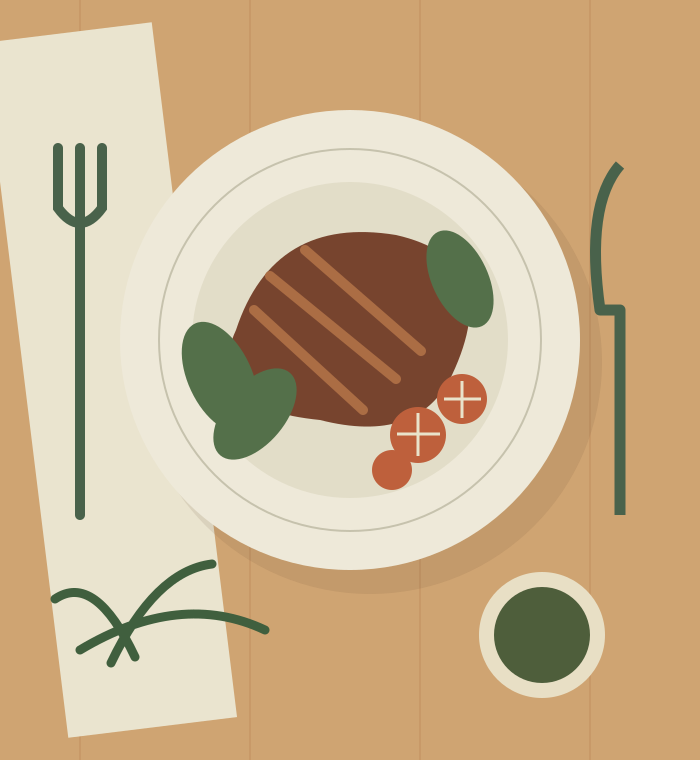

Seu prato, sua escolha.
Produtos com preço individual, preparação e acompanhamento apresentados com clareza.
A partir de R$ 32 / opção de exemploExplorar o menu ↗O encontro entre a liberdade do buffet, o cuidado do à la carte e o tempo generoso de um rodízio. A mesma mesa, muitas possibilidades.
MARCA FICTÍCIA · ARTES AUTORAIS · MODELO PERSONALIZÁVEL

Um modelo pensado para grandes restaurantes que atendem diferentes públicos e modalidades, sem perder a clareza das informações.
Produtos com preço individual, preparação e acompanhamento apresentados com clareza.
A partir de R$ 32 / opção de exemploExplorar o menu ↗Na demo operacional, peso bruto e tara calculam o peso líquido do prato em gramas.
R$ 109,90 / kg · ilustrativoSimular a pesagem ↗Valores por pessoa, com modalidade adulta e infantil. Faixa etária e regras a definir na implantação.
R$ 94,90 / adulto · ilustrativoInfantil: R$ 59,90 · valor de demonstração.Valores e preparações fictícios. Na entrega real, o restaurante aprova ingredientes, disponibilidade, preços e informações sobre alergênicos.
Recepção, salão, cozinha e caixa não podem ser ilhas. Este projeto mostra como uma experiência gastronômica pode ter uma identidade forte por fora e um fluxo claro por dentro.
Sem avaliações inventadas, números de clientes ou selos fictícios. Aqui, você pode testar o que funciona e conhecer o que ainda depende de integração real.
Conhecer o painel operacional ↗Demonstração local com fluxo misto, cálculos em centavos e regras de estoque e caixa.
Abrir operação 360 ↗Diariamente, 11h às 23h — horário fictício.
Alameda de Exemplo, 240 — endereço fictício. Não se desloque para esse endereço.
Recursos de acessibilidade, estacionamento, restrições alimentares e capacidade devem ser confirmados no estabelecimento real.
Para contratar um site ou sistema personalizado, fale com a MOSS Digital. O botão não reserva uma mesa nem envia pedidos a um restaurante.
Falar com a MOSS Digital ↗Experimentar sem cadastroSim. Na demo, uma comanda reúne pratos, bebidas, buffet por peso e rodízio por pessoa, com cada lançamento identificado.
Não. Todos os registros são de demonstração. Não há comunicação com bancos, adquirentes, agenda externa, restaurante real ou entregador.
Não. A sessão acontece nesta aba. O salvamento opcional usa apenas este navegador, sem sincronização. Uma implantação real exige servidor e banco de dados central.
Cadastro e regras reais, infraestrutura central, autenticação, backups e suporte, além de integrações adequadas de pagamentos, emissão fiscal e equipamentos. O checklist de entrega detalha essas etapas.